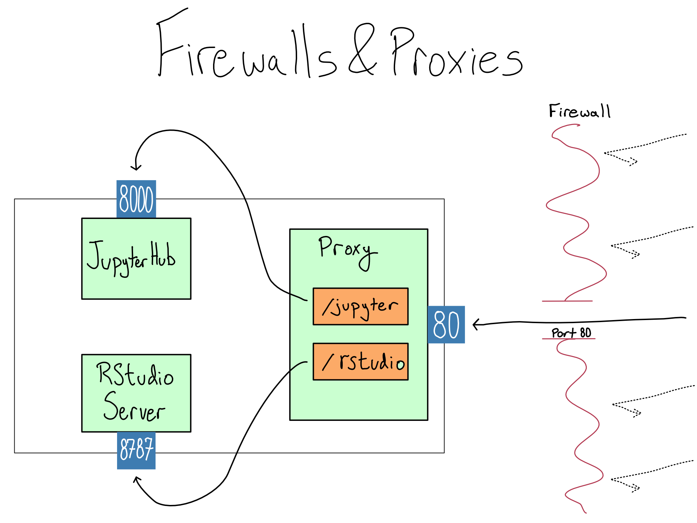

12 Intro to Computer Networks
If you’ve got a server but no one can access it, is it really even there? AWS would say yes, and they will still bill you. But it won’t be useful.
Computer networking – the subject of how computers send information back and forth – is the second big part of administering a server. Once you’ve got a server up and running with the applications you want, you need to make it accessible to the people who need it.
In this chapter, you’ll learn about the basics of how computer networks work and how one computer successfully sends a message to another. In the lab, you’ll get to finally make your data science workbench available on the actual internet.
To learn about computer networks, let’s talk about the mail. The real kind that goes in an envelope and is delivered in trucks. When you want to send a letter, you need to use a valid envelope. You need to address the letter properly and apply a stamp in the right place.
The same is true of digital traffic. While the envelope, stamp, and address are all digital, there are shared rules that define what is valid mail. In networking terms, these rules are called protocols. These days, pretty much all computer networking is accomplished with a stack of protocols called TCP/IP (Transmission Control Protocol/Internet Protocol).
TCP/IP defines all kinds of things about network traffic, from the digital equivalent of what a valid envelope size is to how to load and unload the virtual trucks. Luckily, using a cloud server takes care of almost all of that.
I imagine the server as like an apartment building. Each service lives in one apartment and is waiting for incoming mail. We, as the server admin, are responsible for properly configuring the incoming traffic to make sure it can get to where it’s going.
So the main things you’ll need to understand is how to make sure the incoming mail properly arrives at the building and how it knows which apartment to head to once it gets there.
12.1 Understanding digital addresses
You already use digital addresses all the time in the form of a URL (Uniform Resource Locator).1 A URL fully specifies the network location of a resource and looks like this:
\[\overbrace{\text{https://}}^\text{protocol}\underbrace{\text{google.com}}_\text{domain}\overbrace{\text{:443}}^\text{port}\underbrace{\text{/}}_\text{path}\]
This may look a little strange. You’re probably used to using just the domain and maybe a path in your web browser like \(\text{google.com}\) or \(\text{google.com/maps}\). The reason is that you’re usually fine with the default protocol and port, so you may never have realized they’re there.2
Here’s what each of those four parts are:
The application layer protocol (often just called the protocol) specifies what type of traffic this is. It’s like agreeing that your letter will be in English or Arabic or Dutch.
The domain is a human-readable way of providing the digital street address of the server. We’ll get into the actual address later in the chapter.
The port specifies where on the server to direct the traffic. It’s the digital equivalent of the apartment number.
The path is a human-friendly way of specifying who you intend the message to go to. It’s like the name of person you’re addressing on your letter.
As a cloud server admin, most of the networking you’ll do is to ensure someone can just use a domain with a path and access the resources they need from your server.
12.2 Finding the right digital address
A domain is the human-readable way of addressing a resource on the internet. But it’s not actually the digital street address of any particular server (host). Instead, hosts are actually identified with an IP Address. When that IP address is valid across the entire internet, it’s a public IP address.
IP Addresses are mapped to domains via the Domain Name Service (DNS), which you’ll learn about in Chapter 13
Network traffic arrives in the form of packets, which are routed to the correct IP address in a process called packet switching. You don’t need to understand any more about packet switching than that it reliable gets packets to the right IP Address.3
Once the traffic arrives at the server, it has to get to the right service by getting to the right port. Every computer has just over 65,000 ports. Each port is uniquely identified by a number, and there’s a 1-1 mapping between listening services and open ports. Since you’re probably running no more than a handful of services, the overwhelming majority of the ports are closed at any given time.4
By default, HTTP traffic goes to port \(80\) and HTTPS traffic goes to port \(443\). So if there’s just one service, you would configure the application to listen on port \(80\) and/or \(443\). Then, when people come in, they’d automatically get to the right service.
But sometimes you’ve got multiple services on the server. In that case, each one will need to run on a unique port. However, you don’t want to force users to remember, for example, that they access JupyterHub on port \(8000\). Instead, you want them just to know that it’s on \(\text{/jupyter}\).
A proxy is a piece of software that can be used to map paths to another location. Common proxies you might hear about include the open source NGINX and Apache and the paid F5, which is the developer of NGINX. Depending on the configuration, the proxy can be on the same server or a different one.
If you’re using a proxy, you’d put each of the server’s services on a different port and use the proxy to redirect incoming traffic to the right place based on the subpath.
Now, if you were just to put something on port \(80\) on your EC2 instance and try to access it from the web, it still wouldn’t work. That’s because there’s a firewall sitting in front of your EC2 instance, which blocks traffic to all but certain ports. In AWS, the default firewall is the security group.
In addition to blocking traffic to arriving at certain ports, firewalls can be restricted to allow access only from certain IP Addresses. This can be used, for example, to only allow access from your office to a server. Unless a particular server will only ever be accessed by other servers with known IP addresses, this is a brittle way to configure security and I generally don’t recommend it.
If you think you’ve configured a service correctly and you just can’t seem to access it, one of the first things to check is whether you’ve got the port open in the security group.
One symptom that may indicate a security group issue is if you try to go to your service and it just hangs with no response before eventually timing out.

Once the traffic makes it to the right server, through the firewall and proxy, and to the right port, it has to communicate using the right application layer protocol. We’ve been talking exclusively about the HTTP and HTTPS application layer protocols, because web traffic arrives as a series of HTTP GET requests, but there are many other application layer protocols, each with its own default port.
For example, you’ve already seen a lot about SSH in this book, which is an application layer protocol for allowing secure login and communication over an unsecured network. SSH defaults to port \(22\).
Other important protocols that you might see in this book or elsewhere are SFTP for file transfers, SMTP for emails, LDAP(S) for auth, and websockets, which are used by Shiny and Streamlit.
12.3 Recognizing IP addresses
If you’ve seen an IP address before, it probably was an IPv4 address, which are four blocks of 8-bit fields (numbers between \(0\) and \(255\)) with dots in between, so they look like \(64.56.223.5\).
If you do the math, you’ll realize there are “only” about 4 billion of these. There are so many things on the public internet that we are running out of IPv4 addresses. The good news is that smart people started planning for this a while ago and the adoption of the new IPv6 standard started a few years ago.
IPv6 addresses are eight blocks of hexadecimal (\(\text{0-9}\) and \(\text{a-f}\)) digits separated by colons, with certain rules that allow them to be shortened, so \(\text{4b01:0db8:85a3:0000:0000:8a2e:0370:7334}\) or \(\text{3da4:66a::1}\) are both examples of valid IPv6 addresses. There’s no worry about running out of IPv6 addresses any time soon, because the total quantity of IPv6 addresses is a number with 39 zeroes.
IPv6 will coexist with IPv4 for a few decades and we’ll eventually switch entirely to IPv6.
There are a few special IPv4 addresses it’s worth knowing. You’ll probably see \(127.0.0.1\) a lot, which is also known as \(\text{localhost}\) or loopback. This is the way a machine refers to itself.
For example, if you open a Shiny app in RStudio Desktop, the app will pop up in a little window along with a notice that says
That means that the Shiny app is running on the same computer and is available on port \(6311\). You can open that location in your browser to view the app as it runs.
There are also a few blocks of IPv4 addresses – those that start with \(192.168\), \(172.16\), and \(10\) that are reserved for use on private networks, so they’re never assigned in public.
12.4 Basic network administration
Networking can be difficult to manage because there are so many layers. It will frequently happen that you think a service is configured, but you just can’t seem to access it. Here are some basic tools for network debugging.
12.4.1 Browser devtools
One of the most useful tools for debugging networking issues can be found in the menus of your web browser. It has developer tools that allow you to inspect the network traffic going back and forth between your machine and a remote.
This can be really handy if things are going slowly or if you’re not sure why the page isn’t loading. By inspecting the status codes of different HTTP calls and the time they take, you can develop a pretty good idea of where things might be getting stuck.
12.4.2 SSH tunneling/port forwarding
When you start a new EC2 instance in AWS, the default security group opens only port \(22\), so only SSH traffic is allowed.
So far, you’ve seen SSH used to access the command line on that remote server, but SSH can actually be used to access any port in a process called tunneling or port forwarding.
When you tunnel, you make a port on the remote host available at the same port on \(\text{localhost}\) on your machine. The most common usage is to use your browser to look at what’s available at a specific port on a server via HTTP without configuring the host to accept HTTP traffic on that port.
You can create an SSH tunnel to a remote host with
I find that the syntax for port forwarding completely defies my memory and I have to google it every time I use it.5
So, for example, if your server were running at \(64.56.223.5\) and you has the SSH user test-user, you might forward JupyterHub on port \(8000\) with ssh -L 8000:localhost:8000 test-user@64.56.223.5. Once the tunnel is established, you could access JupyerHub in your browser on \(\text{localhost:8000}\).
12.4.3 Checking what ports are open
Sometimes you can just forget what ports are open on your machine and for what purposes. Or you want to double check that a configuration change took. In that case, you want to use the netstat command to get the services that are running and their associated ports.
For this use, netstat is generally most useful with the -tlp flags to show programs that are listening and the programs associated.
12.4.4 Checking if a host is accessible
The ping command can be useful for checking whether your server is reachable on the network. For example, the server where this book lives is at \(185.199.110.153\). So I can ping that domain to check if it’s accessible.
> ping -o 185.199.110.153
PING 185.199.110.153 (185.199.110.153): 56 data bytes
64 bytes from 185.199.110.153: icmp_seq=0 ttl=58 time=23.322 ms
--- 185.199.110.153 ping statistics ---
1 packets transmitted, 1 packets received, 0.0% packet loss
round-trip min/avg/max/stddev = 23.322/23.322/23.322/nan msThe -o flag tells ping to try just once as opposed to pinging continuously. The fact that I transmitted and received one packet means that everything is working properly.
Seeing an unreachable host or packet loss would be an indication that my networking probably isn’t configured correctly somewhere between me and the server. That means it’s time to check that the server is actually up, followed by firewalls (security groups) and proxies. You can also use ping with a domain, so it can also be used to see if DNS is working properly.
If ping succeeds but a particular resource is inaccessible, curl is can be useful. curl actually attempts to fetch the website at a particular URL. It’s often useful to use curl with the -I option so it just returns a simple status report, not the full contents of what it finds there.
For example, here’s what I get when I curl the website for this book.
> curl -I https://do4ds.com
HTTP/2 200
server: GitHub.com
content-type: text/html; charset=utf-8
last-modified: Tue, 04 Jul 2023 16:23:38 GMT
access-control-allow-origin: *
etag: "64a4478a-79cb"
...The important thing here is that first line. The server is returning a 200 HTTP status code, which means all is well. If you get something else, take a look at the http code cheatsheet in Appendix C.
If ping succeeds, but curl does not, it means that the server is up, but the path or port is incorrect. If you’re running inside a container, you should check that you’ve properly configured the port inside container to be forwarded to the outside.
12.5 Comprehension Questions
- What are the 4 components of a URL? What’s the significance of each?
- Are there any inherent differences between public and private IP addresses?
- Draw a mind map of trying to access the following in your browser. Include the following terms: URL, domain, IP Address, port, path, \(80\), \(443\),
8000, proxy, server, HTTP, HTTPS, status code, protocol- A Shiny app on a server at \(\text{http://my-shiny.com}\) where Shiny Server is sitting on port \(80\).
- JupyterHub on a server at \(\text{https://example.com/jupyter}\) where Jupyter is on port \(8000\).
12.6 Lab: Making it accessible in one place
In this lab, we’re going to set up a proxy to be able to access all of our services over HTTP.
But first, you might want to try out accessing the various services where they are.
You could either try SSH tunneling to them and seeing them on localhost or you could apply custom TCP rules to your security group to temporarily allow access directly to the services. If you want to try, here’s a reminder of where everything is:
| Service | Port |
|---|---|
| JupyterHub | \(8000\) |
| RStudio | \(8787\) |
| Penguin model API | \(8080\) |
| Shiny App | \(3838\) |
If you’re through playing and ready to get everything configured, let’s go ahead. If you changed your security group rules, change them back.
12.6.1 Step 1: Configure Nginx
Honestly, configuring proxies is a somewhat advanced networking topic, and in most cases you’d just put one service per server. But if you want to be able to save money and run everything on one server, you’ll want a proxy.
Configuring Nginx is pretty straightforward – you install Nginx, put the configuration file into place, and restart the service to pick up the changes. The hard part is figuring out the right configuration. Configuring proxies can be quite painful, as the configuration is very sensitive to seemingly meaningless syntax issues.
Here are the steps to configure your proxy on your server for JupyterHub and RStudio Server:
- SSH into your server.
- Install Nginx with
sudo apt install nginx. - Save a backup of the default
nginx.conf,cp /etc/nginx/nginx.conf /etc/nginx/nginx-backup.conf.6 - Edit the Nginx configuration with
sudo vim /etc/nginx/nginx.confand replace it with:
/etc/nginx/nginx.conf
user www-data;
worker_processes auto;
pid /run/nginx.pid;
include /etc/nginx/modules-enabled/*.conf;
events {
worker_connections 768;
# multi_accept on;
}
http {
map $http_upgrade $connection_upgrade {
default upgrade;
'' close;
}
server {
listen 80;
location /rstudio/ {
# Needed only for a custom path prefix of /rstudio
rewrite ^/rstudio/(.*)$ /$1 break;
# Use http here when ssl-enabled=0 is set in rserver.conf
proxy_pass http://localhost:8787;
proxy_http_version 1.1;
proxy_set_header Upgrade $http_upgrade;
proxy_set_header Connection $connection_upgrade;
proxy_read_timeout 20d;
# Not needed if www-root-path is set in rserver.conf
proxy_set_header X-RStudio-Root-Path /rstudio;
# Optionally, use an explicit hostname and omit the port if using 80/443
proxy_set_header Host $host:$server_port;
}
location /jupyter/ {
# NOTE important to also set bind url of jupyterhub to /jupyter in its config
proxy_pass http://127.0.0.1:8000;
proxy_redirect off;
proxy_set_header X-Real-IP $remote_addr;
proxy_set_header Host $host;
proxy_set_header X-Forwarded-For $proxy_add_x_forwarded_for;
proxy_set_header X-Forwarded-Proto $scheme;
# websocket headers
proxy_set_header Upgrade $http_upgrade;
proxy_set_header Connection $connection_upgrade;
}
}
}
- Test that your configuration is valid
sudo nginx -t. - Start Nginx with
sudo systemctl start nginx. If you see nothing all is well.
If you need to change anything, update the config and then restart with sudo systemctl restart nginx.
12.6.2 Step 2: Open port 80
Now, if you try to go to your your server’s public IP address or DNS, your browser will spin for a while and nothing will happen. That’s because the AWS security group still only allows SSH access on port \(22\). We need to add a rule that will allow HTTP access on port \(80\).
On the AWS console page for your instance, find the Security section and click into the security group for your instance. You want to add a new inbound HTTP rule that allows access on port \(80\) from anywhere. Make sure not to get rid of the rule that allows SSH access on \(22\). You still need that one too.
Once you do this, you should be able to visit your server address and get the default Nginx landing page.
12.6.3 Step 3: Configure your subpaths
Complex web apps like RStudio and JupyterHub frequently proxy traffic back to themselves. For example, when you launch a Shiny app in RStudio, you’re actually just opening a “headless” browser window that gets proxied back into your session.
This works by default when those apps are on the root path \(\text{/}\). That’s not true in this case, so we’ve got to let the services know where they’re actually located.
Configuring RStudio Server is already done. The X-RStudio-Root-Path line in the Nginx configuration adds a header to each request coming through the proxy that tells RStudio Server that it’s on the \(\text{/rstudio}\) path.
JupyterHub needs a configuration update to let it know that it’s on a subpath. Luckily it’s a very simple change. You can edit the Jupyter configuration with
Find the line that reads # c.JupyterHub.bind_url = 'http://:8000'.
You can search in vim from normal mode with / <thing you're searching for>. Go to the next hit with n.
Delete the # to uncomment the line and add the subpath on the end. If you’re using the \(\text{/jupyter}\) subpath and the default \(8000\) port, that line will read c.JupyterHub.bind_url = 'http://:8000/jupyter'.
JupyterHub should pick up the new config when it’s restarted with
12.6.4 Step 4: Try it out!
Now we should have each service configured on a subpath. RStudio Server at \(\text{/rstudio}\), JupyterHub at \(\text{/jupyter}\). For example, with my server at \(\text{64.56.223.5}\), I can get to RStudio Server at \(\text{http://64.56.223.5/rstudio}\).
Note that right now, this server is on HTTP, which is not a best practice. In fact, it’s such a bad practice that your browser will probably autocorrect the url to https and you’ll have to manually correct it back to http and ignore some scary warnings. Don’t worry, we’ll fix this in Chapter 14.
12.6.5 Lab Extensions
If you’ve gone to the root URL for your server, you’ve probably noticed that it’s just the default Nginx landing page, which is not very attractive.
You might want to create a landing page with links to the subpath by serving a static html page off of \(\text{/}\). Or maybe you want one of the services at \(\text{/}\) and the others at a different subpath.
Right now, neither the penguins model API or the Shiny app are available from the outside. You might want to add them to the proxy to make them accessible. I’ll leave that as an exercise for you.
It’s very common to put an API and/or a Shiny app behind a proxy. Googling “Shiny app behind nginx” or “FastAPI with nginx” will yield good results.
One thing to consider is whether the model API should be publicly accessible at all. If the only thing calling it is the Shiny app, maybe it shouldn’t be?
URLs are a subset of a broader category called Uniform Resource Identifiers (URIs), which look like a URL and are used to identify a resource by may not be a valid address. I mention them only because you may run across them in certain contexts, like configuring SSO.↩︎
Different resources divide URLs into somewhere between three and seven parts. I think these four are the most useful for this chapter’s purpose.↩︎
How packet switching works isn’t super relevant, but it is cool. Packets are addressed with their target IP address when they’re first created and are passed off to the router to which the computer is connected. Routers are arranged in a tree-style hierarchy. What’s clever is that each router only keeps track of downstream addresses and a single upstream default address. So the packet gets passed upstream until it hits a router that knows about the target IP address and then back downstream to the host.↩︎
Ports are also used for outbound communication. Computers know how to automatically open ports for outbound communication and specify that’s where the response should come, so we’re not going to get into them here.↩︎
As you might guess from this complicated syntax, you can do a lot more than this with SSH tunneling, but this is most often what I use it for.↩︎
This is generally a good practice before you start messing with config files. Bad configuration is usually preferable to a service that can’t start at all because you’ve messed up the config so badly. It happens.↩︎